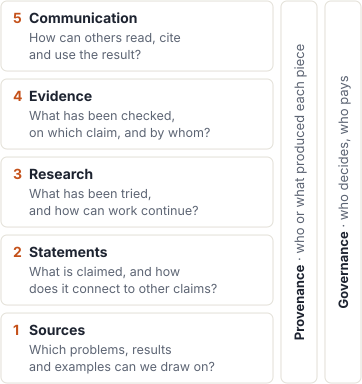

Human–AI Mathematics
Mathematics with AI: a landscape in five layers
About 150 projects, from sources to communication: what is well served and what is missing.
About 150 projects, from sources to communication: what is well served and what is missing.
